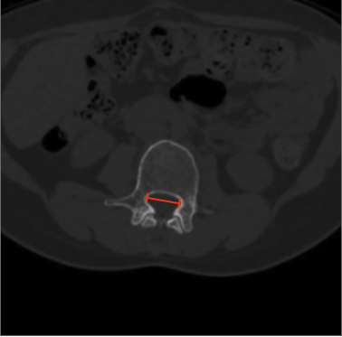

Adapted from: Mousavi F, Knipe H, Silverstone L, et al. Spondyloepiphyseal dysplasia. Reference article, Radiopaedia.org (Accessed on 03 Jan 2026) https://doi.org/10.53347/rID-54316
1) Description of Measurement
Interpedicular distance (IPD) is the transverse distance between the medial cortices of the right and left pedicles at a given vertebral level. It reflects the developmental width of the bony spinal canal and is essential for distinguishing congenital (developmental) lumbar spinal stenosis from acquired degenerative narrowing.
2) Instructions to Measure
3) Normal vs. Pathologic Ranges
Key points:
4) Important References
Schonstrom NS, Bolender NF, Spengler DM. The pathomorphology of spinal stenosis as seen on CT scans of the lumbar spine. Spine (Phila Pa 1976). 1985 Nov;10(9):806-11. doi: 10.1097/00007632-198511000-00005.
Brandt Z, Razzouk J, Nguyen K, et al. Applications of Interpedicular Distance and Anteroposterior Diameter in the Approximation of the Spinal Canal Area. Cureus. 2023 Nov 13;15(11):e48747. doi: 10.7759/cureus.48747.
Li Y, Huang M, Xiang J, et al. Correlation of Interpedicular Distance with Radiographic Parameters, Neurologic Deficit, and Posterior Structures Injury in Thoracolumbar Burst Fractures. World Neurosurg. 2018 Oct;118:e72-e78. doi: 10.1016/j.wneu.2018.06.122.
5) Other info....
IPD is especially useful in younger patients with stenotic symptoms but minimal degenerative change.
Should be interpreted together with:
IPD is a static bony parameter and does not reflect dynamic ligamentous compression.